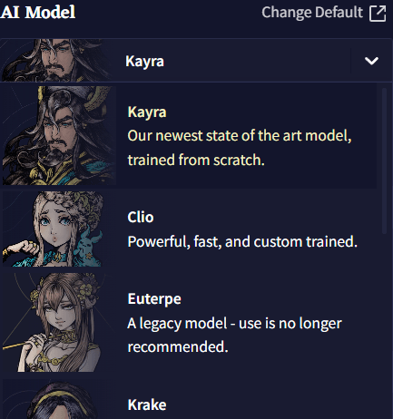
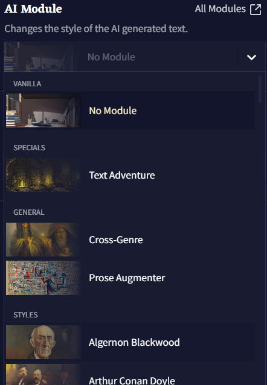
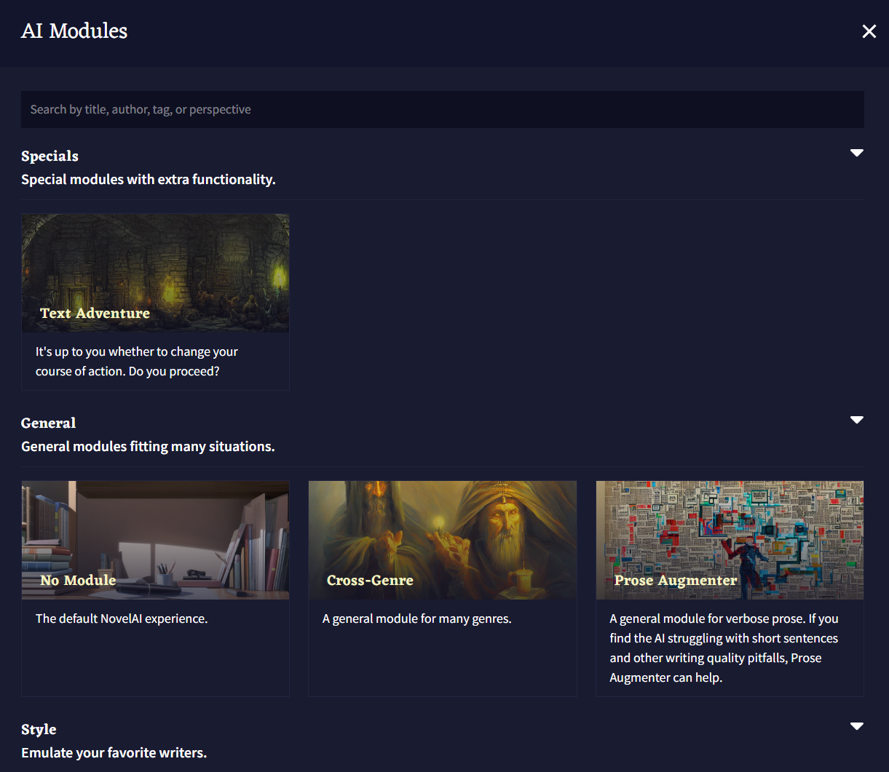
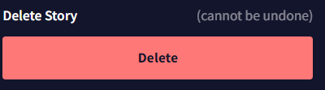
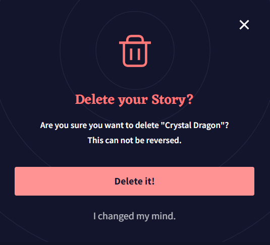

Story Settings
옵션 사이드바의 첫번째 탭인 Story 탭은 NovelAI 모험을 시작하는 첫 번째 단계라고 할 수 있습니다. 이 곳에서, 사용하길 원하는 AI Model을 선택하고 Config Preset을 고르고, Memory와 Author's Note 정보를 채우는 등의 일을 할 수 있습니다! Editor 오른쪽 사이드의 편리한 위치에 있는 이 곳에서 Lorebook Quick Access 바에서 로어북 엔트리들을 빠르게 검색하고, 스토리 통계를 보고, 스토리 파일을 추출하거나 지우는 이 모든 작업을 할 수 있습니다.
AI Model

Story 탭 오른쪽 최상단의 AI Model 셀렉터에서, 파인튜닝되고 실험적인 모델을 선택할 수 있습니다!
Change Default 버튼을 클릭하면 AI Settings 메뉴로 들어갈 수 있고, 그곳에서 기본 스토리 모델과 프리셋, 모듈을 포함하여 Lorebook 생성에 사용할 모델을 선택할 수 있습니다. AI Settings 메뉴에서 선택한 기본 세팅은 새 스토리를 만들 때 적용됩니다.
Goose tip: 기본 세팅을 자주 확인하세요. 새로운 AI 모델과 기능이 출시되면 이 메뉴에서 설정할 수 있어요!
AI Module

AI Modules은 AI를 원하는 장르, 설정, 혹은 월드에 집중시키게 하는 강력한 도구입니다. 영향력 있는 작가나 문체에 초점을 맞추거나 특정한 주제 혹은 텍스트 어드벤쳐 등이 될 수 있습니다. 60가지가 넘는 다양한 모듈을 선택 가능하기 때문에 그 가능성은 무궁무진합니다! All Modules 버튼을 클릭하면 사용자가 임포트한 사용자 모듈을 포함하여 설명과 함께 모든 모듈의 라이브러리를 확인할 수 있습니다! 또한 이 메뉴의 드롭다운 메뉴를 통해 모델을 삭제할 수도 있습니다. Special AI Modules 섹션을 클릭하여 Clio나 Kayra 모듈에 관한 자세한 정보를 얻고, Modules 섹션에서 구모델들을 확인하세요.

Config Preset

Config Preset 드롭다운에는 저장 및 임포트된 사용자 프리셋과 각 모델에 맞는 권장 기본 값이 있습니다! Edit preset 버튼을 클릭하면 Config Settings 탭으로 갈 수 있고 이곳에서 AI Generation Settings을 조절할 수 있습니다.
Memory

Memory Box를 통해 AI가 기억했으면 하는 정보를 저장할 수 있습니다. 현재 설정, 캐릭터, 동료들 및 스토리에서 일어났던 일과 관련된 넓은 범위의 세부 정보를 여기에 저장하십시오. 이야기에서 중요한 요소가 발생할 때마다 Memory Box 필드에 업데이트하면 AI가 일관성을 유지하는데 더욱 도움이 됩니다!
기본적으로, Memory에 입력된 정보는 Story Context 최상단에 배치됩니다.
Author's Note

Author's Note 박스에 입력되는 정보는 AI가 Story Context에서 보는 것들 중에서 가장 최신의 텍스트 중 하나입니다. Author's Note는 기본적으로 Memory보다 더 최근의 컨텍스트에 삽입되므로 메모리의 더 강력한 버전처럼 작동합니다! 약간의 짧은 문장을 넣어서 '일어났으면' 하고 바라는 이야기, AI가 더 집중해줬으면 하는 이야기의 디테일, 원하는 방향으로 AI가 출력물을 생성할 수 있게 은근슬쩍 쿡 찔러볼 수 있는 모든 것을 설명하고 사용할 수 있습니다. Author's Note 박스에 입력되는 모든 것은 AI에 강한 영향력을 미치므로 이 박스를 부지런히 업데이트하십시오.
Lorebook Quick Access

Lorebook Quick Access 검색바는 로어북을 열지 않고도 스토리 탭에서 바로 로어북 엔트리를 빠르게 검색하고, 보고, 수정할 수 있게 해줍니다. Lorebook Quick Access 검색바를 통해 Editor 화면을 가리지 않고 로어북 엔트리를 수정하거나 정보를 더블 체크할 수 있습니다.
Story Options

View Story Stats 버튼을 눌러 스토리에 관한 기술적 정보가 가득 담긴 창을 열 수 있습니다. 여기에는 스토리를 빠르게 다듬거나 스토리의 서식을 지정할 수 있는 Experimental Options도 있습니다!

AI 출력, 유저 입력, 수정된 텍스트의 각 비트는 Data Block으로 계산됩니다; Data Block의 총 수와 Data Block의 출처에 대한 분석은 통계창 상단에서 확인할 수 있습니다. 각각의 출력은 Step으로 계산되며 Dead End는 실행취소되거나 리트라이된 브랜치를 수동으로 삭제할 때마다 수치가 올라갑니다. 개별 텍스트 글자의 수와 Most Used Words 또한 창 상단에서 확인할 수 있습니다.

Generate Additional Stats 버튼을 클릭하면 현재 이야기의 단어 수, 문단 수, 문자의 수가 최빈단어 상위 10개와 같이 표시됩니다.

- Trim Story
Trim Story 버튼을 누르면 Story Context와 현재 Editor 창에 나타나는 스토리만 남기고, 실행취소/다시실행/리트라이의 브랜치가 삭제됩니다. .story 파일에 이야기를 저장할 때, 결과물에 같이 저장되길 원하지 않는 브랜치들을 잘라내고 싶을 때 사용하십시오.
- Flatten Story
Flatten Story 버튼은 스토리에 있는 모든 실행취소/다시실행 히스토리와 브랜치를 삭제하여 현재 진행되고 있는 스토리의 텍스트를 시작 프롬프트로 취급합니다.
- Reset to Prompt
Reset to Prompt 버튼은 에디터의 모든 것을 잘라내어 시작 프롬프트로 입력한 내용으로 되돌아갑니다. 이야기의 모든 브랜치와 히스토리 역시 삭제됩니다.
Remote Storage

Remote Storage 토글을 켜면 로컬에 작성한 스토리를 NovelAI의 서버에 저장하게 할 수 있습니다. 이 토글을 사용하여 다른 브라우저나 모바일, PC와 같이 서로 다른 플랫폼 사이에서 이야기를 전달하십시오!
Export Story
NovelAI 이야기를 로컬에 저장하거나 다른 사람과 공유할 수 있는 등 다양한 방법으로 이야기를 내보낼 수 있습니다! 다른 사람들과 이야기를 공유하고 싶습니까? As Scenario 옵션을 클릭하여 커스텀된 .scenario 파일을 만들어서 쉽게 공유하십시오. As Image 버튼을 클릭하여 커스텀된 .jpg나 .png 스크린샷으로 이야기를 저장할 수도 있습니다!

- To File
To File 버튼을 눌러 이야기를
.story파일로 저장할 수 있습니다. 여기에는 현재 모든 이야기 브랜치와 히스토리가 포함됩니다. 만약.story파일로 이야기를 공유한다면 모든 실행취소와 리트라이도 보이게 됩니다!
- As Scenario
As Scenario 버튼을 눌러 이야기를 공유하면
.scenario라는 고유한 파일로 이야기가 저장됩니다..scenario파일을 NovelAI로 임포트하면 항상 대화상자가 열리므로, 태그를 설정하고 간단한 설정과 함께 유저 커스텀이 가능한 스토리를 만들기 위한 사용자 정의 플레이스 홀더를 포함할 수 있습니다!

- As Plaintext
As Plaintext 옵션을 사용하여 이야기를
.txt파일로 내보낼 수 있습니다. 이 옵션은 이야기 텍스트만을 저장하지만 다른 기기나 에디터에서 쉽게 볼 수 있습니다.
- To Clipboard
To Clipboard 옵션은 전체 이야기를 클립보드로 보냅니다. 그러나 As Plaintext 옵션과는 달리 To Clipboard는 추가적인 이야기 데이터를 같이 전달합니다. 이야기가 큰 경우에는 옵션 실행이 약간 느릴 수도 있습니다.
- As Image
As Image 버튼을 클릭하면 Screenshot Designer라는, 이야기를 예쁘게 꾸밀 수 있는 개인화된 스크린샷을 만들 수 있는 인터페이스가 열립니다! 이 이미지는 임포트할 수는 없지만 당신의 스토리 제작 기술과 인상적인 AI 출력물을 자랑할 수 있는 좋은 방법입니다.

Delete Story

Delete Story 버튼을 누르면 이야기가 삭제됩니다. 삭제된 이야기는 복구할 수 없으므로 팝업 창에서 삭제버튼을 누르기 전에 정말로 이야기를 삭제하고 싶은지 확인하세요!
